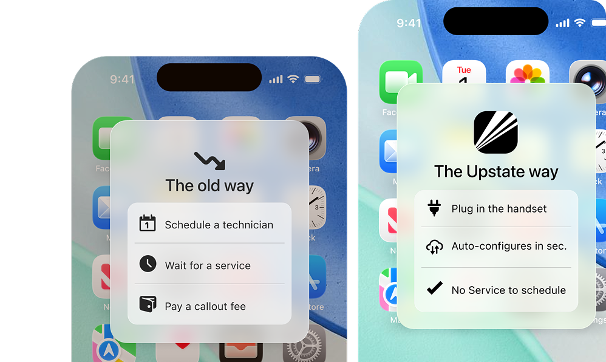

IP Phone System Practical notes from Upstate IP Voice - built for real businesses, not legacy telecom systems.
Request DemoIP Phone System
On-Premise PBX vs. Cloud VoIP: What to Know Before Your Next Upgrade
Before you refresh the closet again, weigh the real cost of owning the box versus running voice in the cloud.
An on-premise PBX feels familiar because it has always been there. The lights blink. The closet stays warm. When something breaks, you know where to look - and that is exactly the problem. Familiar is not the same as fit for how your team works now.
One equipment closet is a single point of failure. Power blip, failed board, bad firmware flash, or a cable someone tugged during a renovation - and the whole office goes quiet. Not one desk. Every desk. Customers hear silence while you hunt for the person who last touched the rack.
Hardware refresh costs hide in the same closet. Cards age out. Licenses stack up. Capacity upgrades mean another visit and another invoice. You are not just buying phones. You are buying a mini data center that only does voice, plus the risk that the next upgrade lands on a busy week you cannot spare.
The old way sold control. Own the box. Touch the cables. Keep voice "in house." In practice that control was a tax. Every change waited on a specialist. Every expansion waited on spare ports. Every outage waited on whoever could get to the building. Control without agility is just a warm closet.
Cloud VoIP flips that ownership model. The dial tone, routing, and features live in distributed infrastructure instead of a box under the stairs. Your office still has handsets and headsets. What it does not have is a fragile server that must stay healthy for anyone to take a call. The endpoint is local. The system is not trapped in one room.
That difference shows up during growth. Adding users on a PBX often means checking port counts and spare licenses. Adding users on a cloud system means provisioning another seat and shipping another pre-configured device. The system scales with the business, not with the closet. A second site does not require a second private phone brain.
Disaster recovery is another quiet gap. With on-premise voice, a building issue can take phones offline even when your team can still work elsewhere. With cloud voice, the number follows the ruleset - to a laptop, a mobile app, or a temporary location - without rebuilding the PBX somewhere else. Continuity becomes a setting, not a construction project.
Day-to-day changes tell the same story. Need a new greeting for a holiday week? Update it in the browser. Need to move reception to a different desk? Move the user, not the wiring plan. Need overflow to another team for a promo? Adjust the route once and every device that shares that identity follows. The old way turned those edits into tickets.
Security and updates follow the same pattern. On-premise gear waits for someone to patch it. Skipped updates pile up until a failure forces attention. Cloud platforms push updates centrally. You spend less time babysitting firmware and more time answering customers. The upgrade path is continuous instead of a stressful weekend cutover every few years.
Cost comparisons go wrong when they only line up monthly seat fees. Price the truck rolls. Price the spare cards you might never use. Price the manager hours spent coordinating outages. Price the revenue risk of a full-floor failure on a Monday morning. Cloud voice usually wins when the full picture is on the page - not when only the line item is.
None of this means every legacy system must leave tomorrow. Some offices will run hybrid for a season while numbers move and habits change. It means the next upgrade decision should price risk, not only monthly line cost. Ask what happens if the closet fails. Ask how long a new location takes to stand up. Ask who owns the next hardware refresh.
Also ask how your team actually works. Split sites. Hybrid schedules. Owners who answer from the truck. Staff who bounce between a desk set and a laptop. An on-premise box assumes the building is the center of the universe. Cloud voice assumes the business is. That assumption matches more Upstate companies every year.
A simple scorecard helps. If the closet fails, how many desks go dark? If you hire three people next quarter, what breaks first - ports, licenses, or patience? If you open a temporary space, do you need another private switch or another pre-configured handset? Write the answers down before you sign another refresh quote.
Upstate IP Voice is built for businesses that want those answers to be simple: no closet dependency, no truck roll for basic changes, and phones that sync to the cloud. When you weigh your next upgrade, start with the IP Phone System pillar and map the risk of the closet against a cloud setup that moves with you. Real businesses need voice that keeps working when plans change - not a system that only works when the equipment room cooperates.
